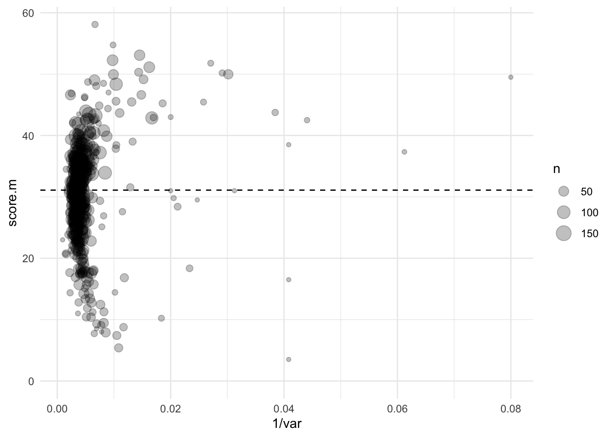
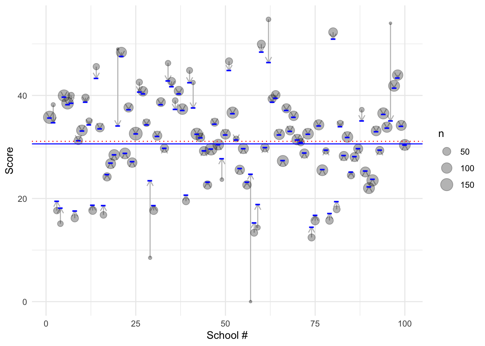
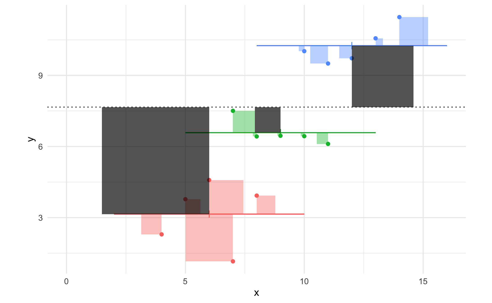

Exercises
Scottish School Leavers
5.1.txt contains data from the Scottish School Leavers Survey (SSLS), a nationally representative survey of young people. The file has data from seven cohorts of young people collected in the first sweep of the study, carried out at the end of the final year of compulsory schooling (aged 16-17) when most sample members had taken Standard grades.
These data form part of the Bristol CMM multilevel modelling course, which is free to students in the UK at https://www.cmm.bris.ac.uk/lemma/
| Name | Piped data |
| Number of rows | 33988 |
| Number of columns | 9 |
| _______________________ | |
| Column type frequency: | |
| numeric | 9 |
| ________________________ | |
| Group variables | None |
Variable type: numeric
| skim_variable | n_missing | complete_rate | mean | sd | p0 | p25 | p50 | p75 | p100 | hist |
|---|---|---|---|---|---|---|---|---|---|---|
| caseid | 0 | 1 | 18465.74 | 11435.16 | 1 | 8531.75 | 17318.5 | 29428.25 | 38192 | ▇▇▇▅▇ |
| schoolid | 0 | 1 | 254.36 | 149.76 | 1 | 123.00 | 256.0 | 386.00 | 511 | ▇▇▇▇▇ |
| score | 0 | 1 | 31.09 | 17.31 | 0 | 19.00 | 33.0 | 45.00 | 75 | ▅▆▇▅▁ |
| cohort90 | 0 | 1 | 0.28 | 5.35 | -6 | -4.00 | -2.0 | 6.00 | 8 | ▇▃▃▁▇ |
| female | 0 | 1 | 0.53 | 0.50 | 0 | 0.00 | 1.0 | 1.00 | 1 | ▇▁▁▁▇ |
| sclass | 0 | 1 | 2.15 | 0.99 | 1 | 1.00 | 2.0 | 3.00 | 4 | ▇▇▁▇▂ |
| schtype | 0 | 1 | 0.05 | 0.21 | 0 | 0.00 | 0.0 | 0.00 | 1 | ▇▁▁▁▁ |
| schurban | 0 | 1 | 0.71 | 0.45 | 0 | 0.00 | 1.0 | 1.00 | 1 | ▃▁▁▁▇ |
| schdenom | 0 | 1 | 0.16 | 0.36 | 0 | 0.00 | 0.0 | 0.00 | 1 | ▇▁▁▁▂ |
Read in the scottish school leaver data (this file)
Use ggplot to visualise how much variation in
scorethere is within and between schools. You might need to subset the data to avoid being overwhelmed.
One option would be a boxplot where schoolid is the x axis. Another would be to use stat_summary which would show the mean and SE for each school.
Use
group_byandsummarizeto calculate the mean and variance ofscorewithin each of the schools, and the sample size in each school (you can usen = length(score)to count the number of observations within each school).Plot the mean of each school (y axis) against the \(1/var\) of the school (x axis).
Think about which observations you ‘trust’ most? Why?
Taking \(1/var\) is often called the ‘inverse variance’ of a measurement. The larger \(1/var\) is, the more confidence we have in the measurement.
If we want to take the average of all schools, then we might ‘weight’ measurements by their precision.
This is, in fact, how meta analysis works: smaller studies are down-weighted in proportion to their precision, not just their sample size. The weighted average in a meta analysis could be calculated as where \(y_i\) is the outcome in a particular study, \(i\).
\(\hat{y} = \frac{\sum_i y_i / \sigma_i^2}{\sum_i 1/\sigma_i^2}\)
If you make a plot as suggested (below) you can see that, looking at the high precision schools (those on the right of the plot), there are more above the mean than below (dotted line). These are still smaller-school (or, fewer students sampled in these schools) but if we ‘trust’ lower-variance estimates more, then we might want to allow for that when we estimate the mean of all schools.
schools.agg <- schools %>% group_by(schoolid) %>% summarize(score.m=mean(score), var=var(score), n=length(score))
schools.agg %>%
ggplot(aes(1/var, score.m, size=n)) +
geom_point(alpha=.25) +
geom_hline(yintercept=mean(schools$score), linetype="dashed")
> Warning: Removed 8 rows containing missing values (geom_point).
Precision-weighting (and mixed models) work on the principle that we want to use information about how precisely each schools’ mean is estimated to inform our overall estimate.
Variance-weighting using mixed models
Mixed models are another way to include information about variability when estimating the overall mean.
Before we do this, let’s calculate the mean of score in the sample as a reference to compare against:
We could equally have calculated the mean of all schools using lm:
(m.lm <- lm(score ~ 1, data=schools))
>
> Call:
> lm(formula = score ~ 1, data = schools)
>
> Coefficients:
> (Intercept)
> 31.09In this model the formula is score ~ 1. The 1 represents an intercept, so the model is estimating the average value across all schools with no other predictors. This is not a weighted average though: we are ignoring the information about which school an observation came from.
To calculate something more like a precision-weighted estimate—that is, one which takes into account how much variability there was within each school to calculate the average of all schools — we can use a mixed model. In R we use the lmer function (in place of lm):
library(lmerTest)
(m.lmer <- lmer( score ~ 1 + (1|schoolid), data = schools))
> Linear mixed model fit by REML ['lmerModLmerTest']
> Formula: score ~ 1 + (1 | schoolid)
> Data: schools
> REML criterion at convergence: 286539.2
> Random effects:
> Groups Name Std.Dev.
> schoolid (Intercept) 7.821
> Residual 16.073
> Number of obs: 33988, groups: schoolid, 508
> Fixed Effects:
> (Intercept)
> 30.6The output here has extra information compared to lm. However like lm the coefficients from the model are listed, which lmer calls ‘fixed effects’.
In this case we only have an intercept, which we can compare with the lm output.
- What is the difference between the weighted and unweighted average for all schools to 2 d.p.?
The difference is 0.49.
One way to think about what is happening here is to compare the average for individual schools with the adjusted predictions made by the model.
The function ranef(m.lmer) gives us a list of the estimated (weighted) averages for each school from the lmer model.
We can make a plot which shows how much the weighted averages ‘shrink’ towards the overall mean. In the plot below:
- the blue dashes are the adjusted estimates for each of 100 schools
- the grey bubbles are the unweighted averages of those schools
- the size of the grey bubbles represents the number of students sampled at that school
- the blue and red lines are the weighted/unweighted average of all schools

Examine the plot above. Which schools ‘shrink’ most? That is, which have the biggest difference between unweighted and weighted values? Does the pattern make sense to you?
How do you feel about the size of the change (i.e. difference between red and blue lines)? Should we care?
The schools that are i) furthest from the mean and/or ii) smallest in size shrink most. This makes sense because these are the schools that we are least confident about.
The red line might not seem that different, but remember that the range of the y axis has to be large to show all the inter-school variation. A change in 0.5 points on this scale might well be important, and in limited-power settings (i.e. small psychological experiments) could also result in a change to the inference we make.
‘Random’ intercepts
In the model above, we told lmer that schoolid was a grouping variable in our data. The formula was:
y ~ 1 + (1|grouping)You can see from this formula there are actually two types of intercept in the model.
- The first
1indicates we should fit the intercept representing the mean of all schools - The second
1, in the(1|grouping)part of the formula tells lmer to fit a random intercept.
By random intercept, we actually mean fit an intercept (mean) for each school individually. This means the model is like the one shown in the lecture slides:

The coloured lines in this plot are the random intercepts, and the dotted line is the overall intercept (average of all schools).
Look at the area covered by the grey squares, and the coloured squares, in the plot below.
Can you identify which numbers in the lmer output would refer to the size of each set of squares?
- Grey squares:
- Coloured squares:
The grey squares relate to the schoolid term in the ‘Random effects’ section. The coloured squares are the Residual.
| grp | vcov | squares |
|---|---|---|
| schoolid | 61.17 | Grey |
| Residual | 258.4 | Coloured |
Summary
- A simple average ignores how much variation there was within schools.
- The inverse of the variance is a measure of precision.
- Adjusting our estimate for sample size and precision can change our estimate of the overall mean
- Uncertain values are ‘shrunk’ towards the overall mean. That is: if a school has lots of variability, and a mean which is far from the overall average, we shrink our estimate for that school to account for the uncertainty.
To do this in R:
- use
lmernotlm - include the grouping variable at the end of the formula (i.e.
(1|grouping)) - the
lmermodel splits the total variance within and between schools (as we did in the example plots)
- Can you think of examples in experimental settings where ‘shrinkage’ might be useful? Discuss why this might be the case.
One example would be in experiments where participants make many responses, e.g. in a computer-based task. If a participant is very variable in their responding then we might be less-certain about our estimate of their mean response.
Traditionally experimenters might deal with variable responding by excluding participants or data. But this can be arbitrary (where do we set the threshold?) and also doesn’t deal fully with the imprecision. For example, we might exclude responses were an RT is > 3000ms, but this would still allow some participants to be much more variable than others.
‘Shrinking’ variable-responders towards the overall mean is a more principled way of dealing with this lack of precision. It avoids arbitrary cutoffs, can and might increase power when some participants have responded eratically or didn’t fully engage with the task. It also enables us to explore variability within and between participants directly, as we’ll see later.
Variance components
We will cover this in more detail later, but it’s worth also looking at another part of the lmer output. This time we pass the saved model to the summary function:
m.lmer %>% summary()
> Linear mixed model fit by REML. t-tests use Satterthwaite's method [
> lmerModLmerTest]
> Formula: score ~ 1 + (1 | schoolid)
> Data: schools
>
> REML criterion at convergence: 286539.2
>
> Scaled residuals:
> Min 1Q Median 3Q Max
> -2.9764 -0.7011 0.1017 0.7391 3.0819
>
> Random effects:
> Groups Name Variance Std.Dev.
> schoolid (Intercept) 61.17 7.821
> Residual 258.36 16.073
> Number of obs: 33988, groups: schoolid, 508
>
> Fixed effects:
> Estimate Std. Error df t value Pr(>|t|)
> (Intercept) 30.6006 0.3698 450.7146 82.74 <2e-16 ***
> ---
> Signif. codes: 0 '***' 0.001 '**' 0.01 '*' 0.05 '.' 0.1 ' ' 1In the output above we can see a section called ‘Random effects’. By ‘random’, lmer is referring to estimates of variance not that the results are random! As an aside, the ‘mixed’ in the name mixed models refers to the mix of ‘fixed’ and ‘random’ effects. We’ll discuss these terms more later on.
We can see the there are two lines in this table, marked:
schoolid (intercept)Residual
If we add the Variance values together we get 320. This is, the total variance in the score outcome.
However, because we have the variance split into two numbers we can calculate the proportion of total variance explained by differences between schools (what is left over is explained by variation between children).
\(var_{j} = \frac{between}{total}\)
Run summary on the saved lmer model and calculate the proportion of variance which is between schools, and how much is within schools.
61.2 / 319.6 * 100 = 19%